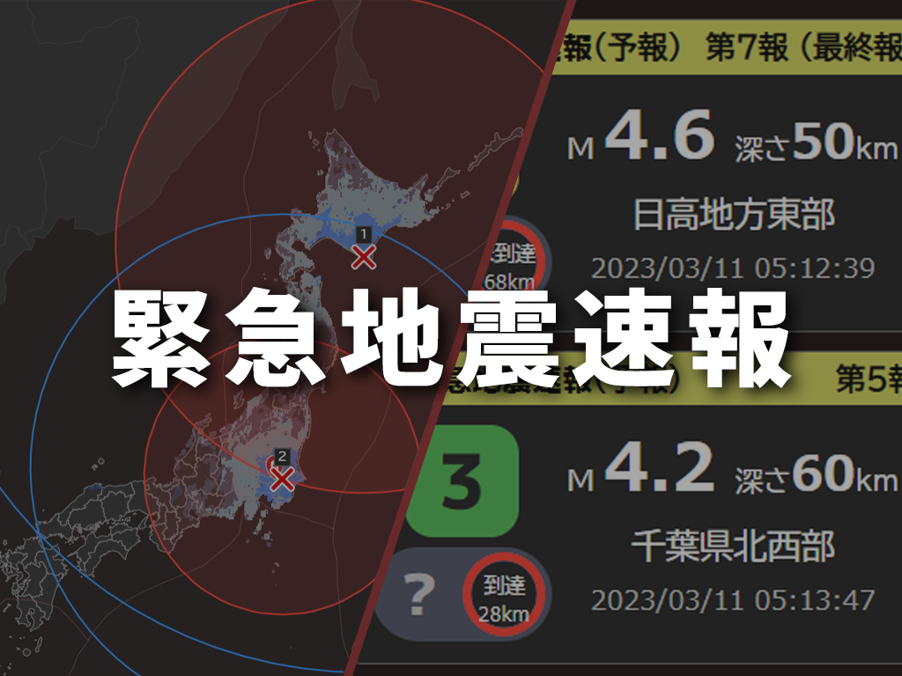

地震に関する情報を即座に受信できるアプリケーションです。
緊急地震速報に加え、津波情報や地震情報の受信に対応しています。このアプリ一つで、様々な種類の情報を、迅速に、分かりやすく表示します。
独自の分かりやすい表示で、様々な種類の情報を表示できます。
トップページ
概要
ダウンロード
Zero Quake(v-.-.-) Windows版(x64)
ダウンロード紹介
様々な情報をこれ１つで
気象庁からの緊急地震速報、地震情報、津波情報に加え、強震モニタからのリアルタイム揺れ情報、それをもとにした独自の地震検知など、多数の情報をこのアプリ一つで確認できます。
迅速で詳細な情報
PLUM法、キャンセル報など、様々な種類の緊急地震速報に対応。複数同時表示にも対応。複数の情報源から、迅速に情報を受信します。取得した情報をできる限り損なわないよう、詳細な表示をします。
高い信頼性
複数の情報源からの情報取得により、サーバーダウンなどのリスクを分散。確実に情報を取得できます。インターネットの切断時も、切断前に取得した情報を表示し続けられます。
また、エラー時にも自動的に復旧する仕組みを搭載しています。
すべての人に分かりやすい表示
配色・フォントの面でユニバーサルデザインに配慮しています。
独自に情報を整理し、分かりやすく、詳細な表示に心がけています。
表示する情報
緊急地震速報
PLUM法、キャンセル報など、様々な種類の緊急地震速報に対応。複数同時表示にも対応。複数の情報源から、迅速に情報を受信します。一目で地震発生がわかる、直感的なUIを備えています。
地震情報
地震情報を、地図・リスト等を利用して、分かりやすく表示します。様々な種類のある地震情報を一つの画面に統合し、表示します。情報更新時には迅速に画面を更新するため、新しく詳細な情報を確認できます。
受信できる地震情報：震度速報／震源に関する情報／ 震度・震源に関する情報[震度・震源情報／遠地地震に関する情報] ／長周期地震動に関する観測情報／顕著な地震の震源要素更新のお知らせ／推計震度分布
津波情報
メイン画面での大津波警報・津波警報・津波注意報・津波予報の地図表示はもちろん、当アプリ独自の分かりやすい表形式での情報表示に対応。表では、第一波到達時刻、最大波の予測、また、第一波・最大波の観測情報、満潮時刻に至るまで、詳細な情報を確認できます。
リアルタイム揺れ情報
防災科学技術研究所の強震モニタから取得した、全国1000地点以上のリアルタイムの揺れ情報に加え、S-net海底地震計の準リアルタイム揺れ情報を表示できます。
また、そのデータを利用した独自の地震検知機能を搭載。いちはやく地震の情報を取得できます。
※ページ中のスクリーンショットは、最新バージョンのアプリケーションのものとは限りません。
画像中の地図データ：©気象庁